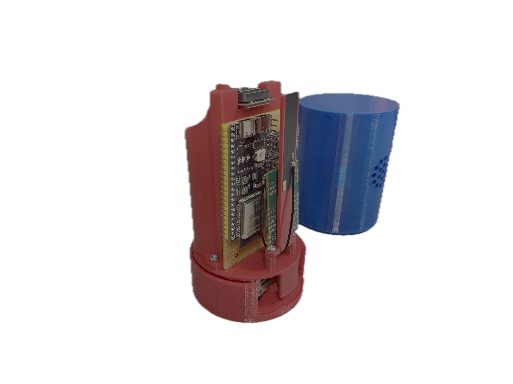
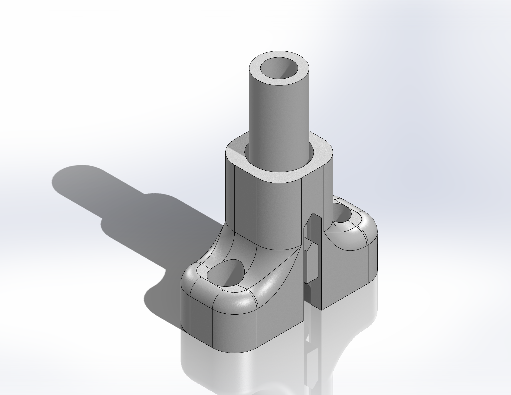
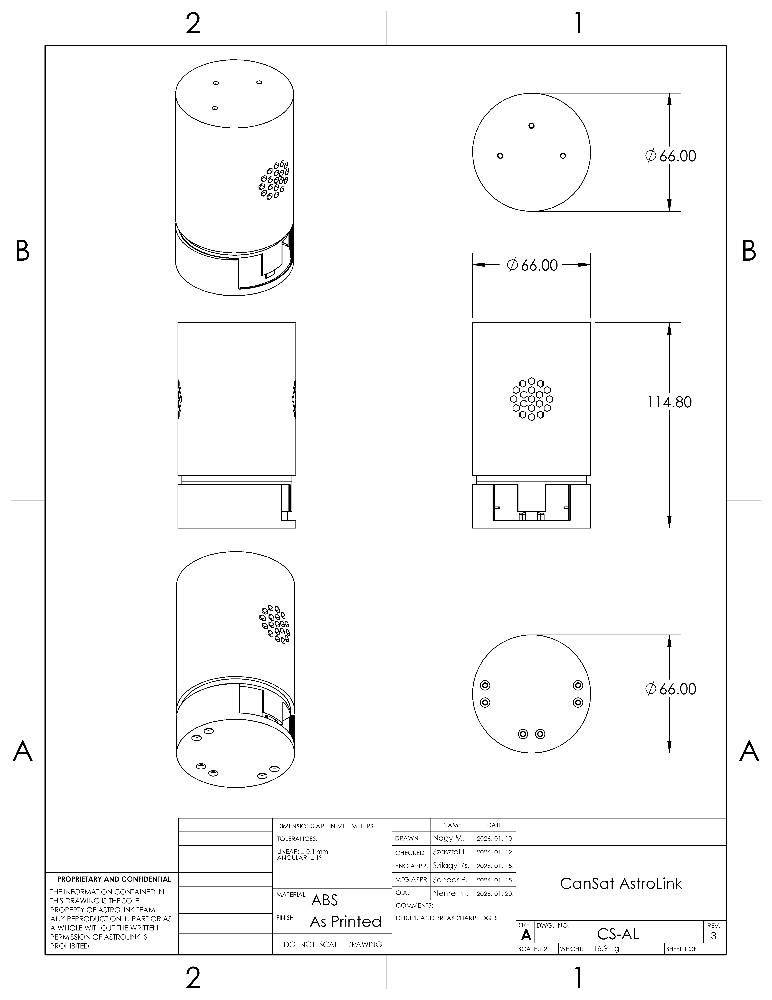
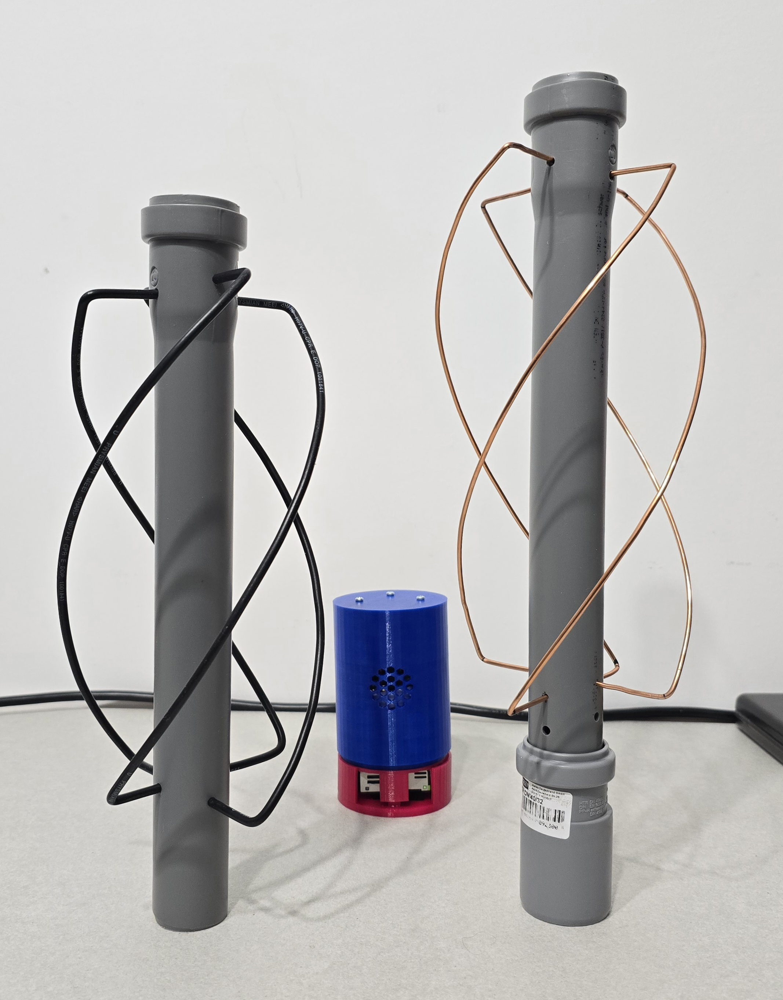
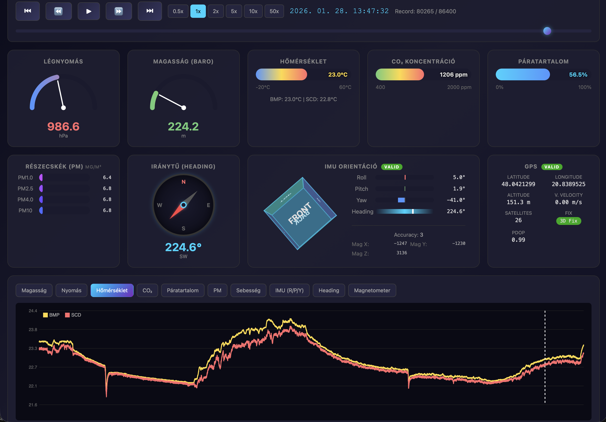

Team: AstroLink
School Name & City: Miskolci Szakképzési Centrum Kandó Kálmán Informatikai Technikum, Miskolc
Date: February 2026
Video link: [TODO: Insert YouTube/Google Drive video link here]
Team AstroLink is a group of students from the Kandó Kálmán Informatikai Technikum in Miskolc, Hungary. Our team combines expertise in software development, electronics, 3D design, and communication systems to create a comprehensive CanSat solution for atmospheric research.
| Name | Role | Responsibilities | Time Spent |
|---|---|---|---|
| Szászfai László | Software Developer | Firmware development, sensor integration, embedded C/C++ programming | 96 hours |
| Németh Imre | Recovery System Engineer | Parachute design, testing, and deployment mechanism | 79 hours |
| Nagy Marcell | Mechanical Designer | 3D modeling, structural design, CAD drawings | 94 hours |
| Fodor Levente Gábor | Communications Engineer | Web interface development, LoRa radio communication | 53 hours |
| Szilágyi Zsombor | Electronics Engineer | Circuit design, PCB layout, hardware integration | 85 hours |
| Szilágyi Bálint | Web Developer | Ground station web interface, data visualization | 41 hours |
| Name | Role |
|---|---|
| Sándor Péter | Hardware, software, and design mentor |
| Sike László | Documentation and deadline management mentor |
The AstroLink CanSat mission focuses on measuring air quality parameters at different atmospheric layers during descent. Our primary scientific objective is to create a vertical profile of particulate matter concentration from approximately 1 km altitude down to ground level.
Measure atmospheric temperature and pressure during descent to calculate altitude and descent rate.
Investigate vertical distribution of airborne particulate matter (PM1.0, PM2.5, PM4.0, PM10) using the Sensirion SPS30 sensor. This data provides insights into PM concentration gradients, altitude-air quality relationships, and meteorological correlations.
The AstroLink CanSat will be launched on a rocket to an altitude of approximately 1 km, where it will be ejected and descend under a parachute system at a rate of approximately 5-6 m/s. During descent, it will continuously measure atmospheric parameters using its sensor suite and transmit data to the ground station via LoRa radio link while simultaneously storing all data onboard. The satellite will remain active for at least 4 hours after landing to facilitate recovery.
MCU: ESP32-S3 | Sensors: BMP585, M100-Pro GPS, SPS30, BNO085, SCD40, QMC5883L | Communication: E22-900M30S LoRa (868 MHz) | Power: 2x Li-Ion + boost converter | Recovery: Parachute
System block diagram
The CanSat structure is designed to fit within the standard dimensions (66 mm diameter, 115 mm height) while protecting all components during launch, descent, and landing.
Modular vertical structure with three struts: Bottom: SPS30 particulate sensor with foam dampening and hex ventilation grille | Upper section: divided into two compartments — one side holds the battery separator cylinder with GPS mounted on top, other side contains the main electronics (ESP32-S3, sensors, LoRa module with antenna). Outer cylindrical shell provides structural protection.
Custom shock absorption system: three strut assemblies with sliding piston mechanism and foam pads absorb landing impact, reducing peak G-forces on electronics.

AstroLink CanSat - assembled prototype

StrutAssembly - shock absorber

CanSat assembly - 3D CAD model
| Part | Material | Purpose |
|---|---|---|
| OuterShell | ABS | Main cylindrical body with hexagonal honeycomb ventilation pattern for SPS30 airflow |
| TopPlate | ABS | Upper cover, antenna mounting surface |
| BottomPlate | ABS | Lower cover, structural base |
| StrutAssembly (x3) | ABS + foam | Sliding shock absorbers - cylindrical guides with foam cushioning at bottom for landing impact dampening |
| Case | ABS | Internal electronics housing |
| Battery holders (x2) | ABS | Cylindrical holders for 18650 Li-Ion cells |
| AntennaMount | ABS | GPS and LoRa antenna bracket |
| SPS30 mount | ABS + foam | Sensor holder with foam padding underneath for vibration isolation |
The electrical system is built around the ESP32-S3 microcontroller, which provides sufficient processing power, memory, and connectivity options for our mission requirements.
| Sensor | Interface | Pins | Address/Speed |
|---|---|---|---|
| BNO085 (IMU) | SPI | GPIO5 (SCK), GPIO6 (MOSI), GPIO7 (MISO), GPIO15 (CS), GPIO10 (INT), GPIO11 (RST) | SPI Mode |
| BMP585 (Pressure) | I2C | GPIO8 (SDA), GPIO9 (SCL) | 0x47, 400 kHz |
| SCD40 (CO2) | I2C | GPIO8 (SDA), GPIO9 (SCL) | 0x62, 400 kHz |
| QMC5883L (Magnetometer) | I2C | GPIO8 (SDA), GPIO9 (SCL) | 0x0D, 400 kHz |
| M100-Pro HGLRC (GPS) | UART1 | GPIO17 (TX), GPIO18 (RX) | 115200 baud |
| SPS30 (Particulate) | UART2 | GPIO14 (TX), GPIO13 (RX) | 115200 baud |
| WS2812 (Status LED) | GPIO | GPIO48 | - |
The CanSat uses the industrial-grade EBYTE E22-900M30S LoRa modem for long-distance telemetry.
Module Specifications:
Frequency Compliance:
The system is compliant with NMHH (Hungary) and CEPT (EU) approved high-power SRD h1.5 sub-band. Although the hardware supports 30 dBm (1000 mW) output power, software configuration limits it to the regulatory maximum.
Antenna and Range:

QFH antenna prototypes
LoRa Module (EBYTE E22-900M30S) SPI2 Connection:
| E22 Pin | Function | ESP32-S3 GPIO |
|---|---|---|
| SCK (18) | SPI Clock | GPIO36 |
| MISO (16) | SPI Data Out | GPIO37 |
| MOSI (17) | SPI Data In | GPIO35 |
| NSS (19) | Chip Select | GPIO38 |
| NRST (15) | Reset (active low) | GPIO39 |
| BUSY (14) | State Indicator | GPIO40 |
| DIO1 (13) | Interrupt | GPIO41 |
| RXEN (6) | RX Enable | GPIO42 |
| TXEN (7) | TX Enable | GPIO2 |
| VCC (9,10) | Power | 3.3V |
| GND (1-5,11,12,20,22) | Ground | GND |
Since the system is built from off-the-shelf modules connected to the ESP32-S3, no custom PCB or traditional circuit schematic is required. All connections are documented in the pin assignment tables above and in the system block diagram.
Navigation is handled by the HGLRC M100_MINI GPS module (10 Hz update rate, UBX protocol at 115200 baud). Its specifications (50 km altitude, 500 m/s velocity limits) exceed CanSat requirements. The ceramic patch antenna faces upward, clear of metal components.
The system uses point-to-point wiring (perfboard) with multi-stranded silicone wires and heat-shrink insulation on all solder joints. Components are secured with hot glue and cable ties for vibration resistance. A "Shake Test" verifies mechanical integrity before flight.
The CanSat firmware is developed using the ESP-IDF framework with FreeRTOS for real-time task management. The software architecture is designed for reliability, modularity, and efficient data handling.
Framework: ESP-IDF with FreeRTOS | Build System: PlatformIO | Language: C/C++
The firmware uses a multi-task architecture where each sensor has its own dedicated task running at an appropriate priority and frequency:
| Task | Priority | Frequency | Purpose |
|---|---|---|---|
| gps_task | 8 | ~1 Hz | GPS UBX protocol parsing, position/velocity data |
| sps30_task | 10 | ~1 Hz | Particulate matter measurement (secondary mission) |
| bno085_task | 5 | 50 Hz | IMU quaternion, acceleration, gyroscope |
| bmp585_task | 6 | 10 Hz | Pressure, temperature, altitude calculation |
| scd40_task | 6 | 1 Hz | CO2, temperature, humidity |
| lora_task | 7 | Variable | Telemetry transmission to ground station |
Program flow diagram showing initialization, tasks, data handling, and flight states
The system uses a compact 64-byte binary record format to store flight data efficiently:
| Data Field | Size (bytes) | Description |
|---|---|---|
| Timestamp | 4 | Unix time or uptime in seconds |
| GPS data | 20 | Latitude, longitude, altitude, velocity, fix type, satellites |
| Orientation | 10 | Quaternion (i, j, k, w) and accuracy status |
| Magnetometer | 8 | X, Y, Z raw values and computed heading |
| BMP585 | 8 | Pressure (Pa), temperature, barometric altitude |
| SCD40 | 6 | CO2 (ppm), temperature, humidity |
| SPS30 | 8 | PM1.0, PM2.5, PM4.0, PM10 concentrations |
| Total | 64 | Per sample record size |
PSRAM buffer: 86,400 records (24h at 1Hz) | LittleFS: Persistent binary files | Per flight: ~7.5 KB descent data
The recovery system ensures safe descent and landing of the CanSat while meeting the required descent rate of 5-12 m/s (8-11 m/s recommended).
Target: ~5.6 m/s (within 5-12 m/s requirement) | Mass: 316 g | Parachute: 550 mm dia, 100 mm vent, 0.23 m² effective area, Cd ~0.70
Descent duration: From 1000 m at 5.6 m/s ≈ 179 seconds (~3 minutes)
The ground station receives telemetry data from the CanSat via LoRa radio link and provides real-time visualization and data logging capabilities.
Receiver: E22-900M30S LoRa module | Antenna: Handmade QFH tuned to 868 MHz | Computer: Laptop with ground station software
Web-based interface providing: real-time GPS tracking, live sensor visualization, 3D orientation display, data logging, flight playback with charting, and connection status indicators.

Flight Data Viewer interface
Frequency: 869.500 MHz (SRD h1.5 band: 869.40–869.65 MHz)
Compliance: NMHH (Hungary) / CEPT ERC 70-03 (Annex 1, band h1.5) - max 500 mW ERP, <10% duty cycle, no license required.
The CanSat is on track to be fully launch-ready by the end of March 2026.
| Phase | Period | Status |
|---|---|---|
| Concept design & team formation | Sep – Oct 2025 | Completed |
| Component procurement | Oct – Nov 2025 | Completed |
| 3D design & prototyping | Nov 2025 – Feb 2026 | Ongoing refinement |
| Software development (firmware) | Nov 2025 – Feb 2026 | Nearly complete |
| Hardware integration & wiring | Dec 2025 – Jan 2026 | Completed |
| Sensor calibration & testing | Jan – Feb 2026 | Completed |
| CDR submission | 16 Feb 2026 | In progress |
| Final assembly & drop tests | Feb – Mar 2026 | In progress |
| Ground station finalization | Feb – Mar 2026 | In progress |
| Launch-ready CanSat | End of Mar 2026 | On track |
Total budget must not exceed 500 EUR. Exchange rate: 400 HUF/EUR.
| Component | Quantity | Unit Price (EUR) | Total (EUR) | Sponsored |
|---|---|---|---|---|
| ESP32-S3-DevKitC-1 N16R8 | 1 | 10.50 | 10.50 | Yes (Kandó) |
| BNO085 IMU | 1 | 21.91 | 21.91 | Yes (Kandó) |
| BMP585 Pressure Sensor | 1 | 12.66 | 12.66 | Yes (MSZC) |
| SCD40 CO2 Sensor | 1 | 10.90 | 10.90 | Yes (Kandó) |
| QMC5883L Magnetometer | 1 | 2.50 | 2.50 | Yes (MSZC) |
| SPS30 Particulate Sensor | 1 | 26.58 | 26.58 | Yes (Szonár) |
| M100-Pro HGLRC GPS | 1 | 17.51 | 17.51 | Yes (Mentor) |
| LoRa Module (E22-900M30S) | 2 | 3.06 | 6.12 | Yes (Mentor) |
| Li-Ion Battery (Cellevia CL-18650-29E) | 2 | 7.59 | 15.18 | Yes (Mentor) |
| TP4056 Charger + Boost Module | 1 | ~2 | ~2 | Yes (MSZC) |
| 3D Printing Filament (ABS) | 1 kg | ~20 | ~20 | Yes (MSZC) |
| Parachute materials | - | ~10 | ~10 | Yes (MSZC) |
| Wires, connectors, misc | - | ~15 | ~15 | Yes (Szonár) |
| Electronics subtotal | ~126 EUR | |||
| TOTAL | ~171 EUR |
Sponsors:
| Test | Purpose | Method | Status |
|---|---|---|---|
| Sensor validation | Verify sensor accuracy | Compare with reference instruments | Planned |
| LoRa range test | Verify >1 km range | Distance test with RSSI logging | Planned |
| Power endurance | Verify 4+ hour battery life | Full system operation test | Planned |
| Vibration / Shake test | Verify structural integrity | Manual shake test | Planned |
| Drop / Impact test | Verify parachute and landing | Drop from height, various surfaces | Planned |
| Cold test | Verify low-temp operation | Freezer test at -10°C | Planned |
| Integration test | Full system verification | Complete mission simulation | Planned |
Once the CanSat reaches a demonstrable state, we will present the project to students and teachers at our school (MSZC Kandó Kálmán Informatikai Technikum). The presentation will cover the mission objectives, technical design, and hands-on demonstration of the working satellite.
Following a successful competition result, we plan to maximize media coverage through:
Our goal is to demonstrate that Team AstroLink from Kandó can achieve a top 10 placement through precision engineering and meticulous attention to detail, earning the opportunity to have our CanSat launched.
The following table summarizes how the AstroLink CanSat meets the competition requirements:
| Characteristic | Quantity (unit) | Requirement | Eligible (Yes/No) |
|---|---|---|---|
| Height of the CanSat | 114.8 mm | ≤ 115 mm | Yes |
| Mass of the CanSat | 316 g | 300-350 g | Yes |
| Diameter of the CanSat | 66 mm | ≤ 66 mm | Yes |
| Length of the recovery system | 500 mm | - | Yes |
| Flight time scheduled | ~179 s | ≤ 120 s recommended | Yes* |
| Calculated descent rate | ~5.6 m/s | 5-12 m/s (8-11 recommended) | Yes |
| Radio frequency used | 869.4–869.65 MHz | European SRD (≤500mW, ≤10% duty) | Yes |
| Power consumption | ~251 mA avg / ~1.25W | 4+ hours operation | Yes (~17 hours) |
| Total cost | ~169 EUR | ≤ 500 EUR | Yes |
The following table details the power consumption of each component:
| Device | Voltage (V) | Current (mA) | Power (mW) |
|---|---|---|---|
| ESP32-S3 MCU | 3.3 | 80 (typical) | 264 |
| BNO085 IMU | 3.3 | 12 | 40 |
| BMP585 Barometer | 5.0 | 0.5 | 2.5 |
| SCD40 CO2 Sensor | 3.3 | 15 | 50 |
| QMC5883L Magnetometer | 3.3 | 2 | 6.6 |
| SPS30 Particulate Sensor | 5.0 | 60 | 300 |
| M100-Pro HGLRC GPS | 5.0 | 25 | 125 |
| LoRa Module (E22-900M30S) | 3.3 | 120 (TX) | 396 |
| WS2812 Status LED | 3.3 | 20 | 66 |
| Total power (sum of all) | / | / | ~1250 mW |
Battery: 2x Cellevia CL-18650-29E (parallel) — 5340 mAh, 19.5 Wh, 3.7V nominal
Power consumption: ~930 mW average (251 mA at 3.7V) | Estimated runtime: 5340 mAh / 251 mA = ~21.3 hours (with 80% efficiency: ~17 hours)
Conclusion: The dual-battery configuration provides over 4x the required 4-hour minimum.
(To be signed by the mentor)
On behalf of the team, I confirm that our CanSat meets all the requirements set out in the official guidelines for the CanSat Hungary 2026 competition.
Signature, place and date: